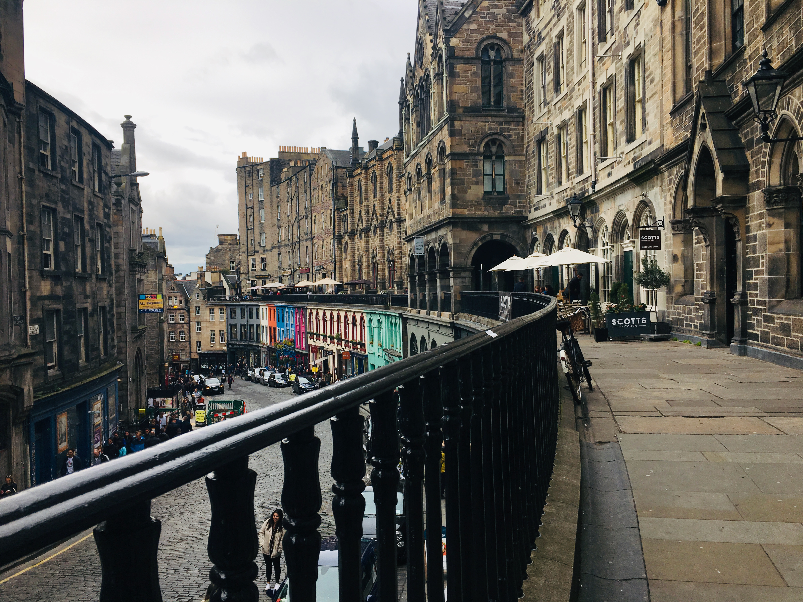

cd varsha/mind/thoughts/photography
Take me home

As if getting lost on on level of street wasn't enough, Edinburgh introduced two

Dear Portland, Here is what I learnt from you.
Your Japanese garden is full of juxtapositions. Shade with sunlight; green with white; rigidty of rocks with fluidity of water; presence with absence; form with emptiness.
The differences created meaning. None of the juxtapositions felt forcefully designed; rather they felt subtlety discovered.
Is it your metaphor for life? One that asks to discover and enjoy the juxtapositions in our very own lives. To realize how they create meaning in our lives.
I also learnt that your name was decided by a coin toss. Well, that's how I'm going to take decisions now on.
Love,
Varsha
This one is without a filter; the way Buddha would have seen
Well, 30,000 feet can offer more than an overview.
Tree persisted. Fate smiled.
This unique museum without labels is meta art and Isabella Stewart Gardner was a genius.
This one is without a filter; the way Buddha would have seen
Take me home